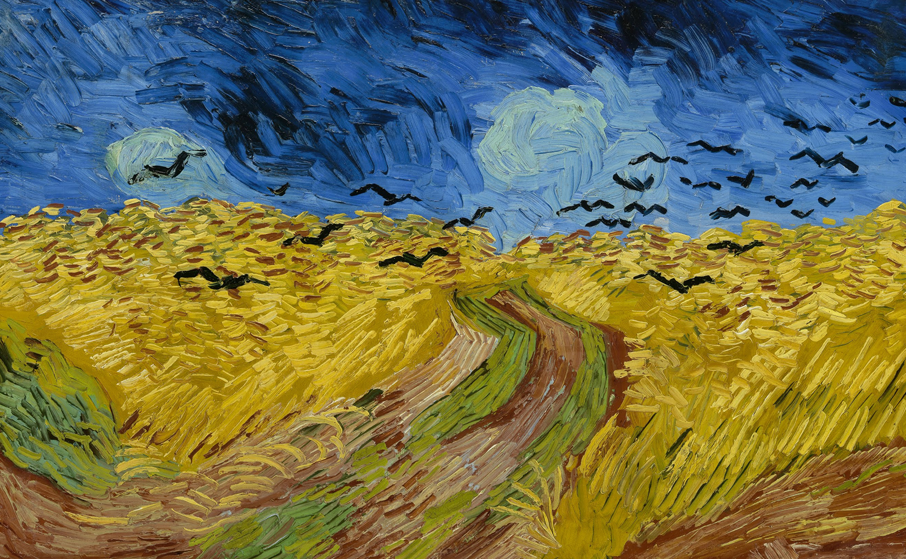

Nossa Capa
- 
 Campo de trigo com corvos, de Vincent Van Gogh – 1890
Campo de trigo com corvos, de Vincent Van Gogh – 1890
A obra de Van Gogh escolhida para ilustrar nossa capa mostra o céu ameaçador, os corvos e um caminho de um beco sem saída nos remete à questão do Caos, um reflexo da turbulência interna, do desespero e da solidão do artista que, ao mesmo tempo, pôde usar de criatividade para representar sua dor.